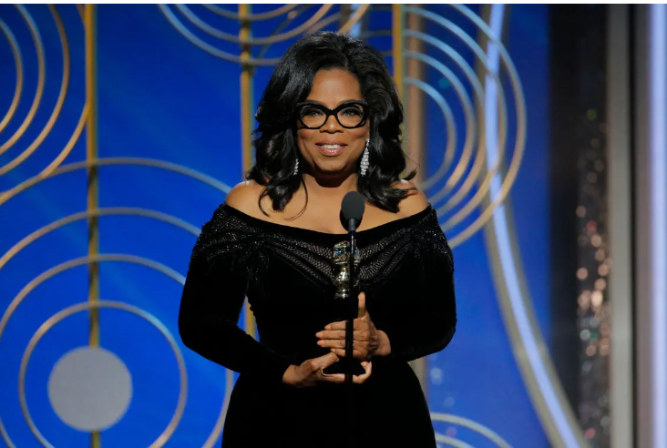
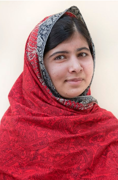
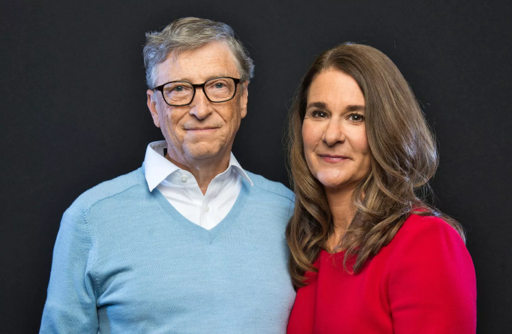
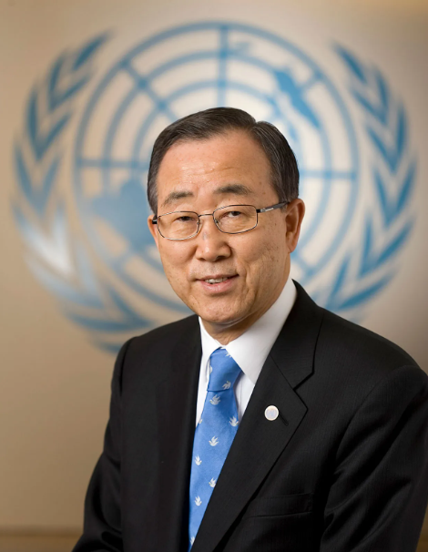

Oprah Winfrey
Oprah Winfrey has championed access to quality education both in the United States and across the globe for more than a decade. In 2007, she founded The Oprah Winfrey Leadership Academy for Girls in South Africa — a school that offers girls from underprivileged backgrounds access to the education and support they need to thrive. And she has funded Charter Schools and college scholarships in Chicago, and Philadelphia among other cities.

Malala Yousafzai
Nobel Peace Prize winner Malala Yousafzai is a fierce champion for gender equality and education, both of which are key to helping people break out of the cycle of poverty. Born in Pakistan, where 3 million girls do not attend primary school, she became an activist at a young age. In 2012, she was shot by the Taliban for speaking out publicly about the importance of education for girls, and gained international attention.
Reverend William Barber II
Following in the footsteps of Martin Luther King Jr., Reverend William Barber II has dedicated his life to fighting inequality and injustice through non-violent means. Barber is a leader of the Poor People's Campaign, a movement that seeks to end poverty in the richest nation in the world.

Bill and Melinda Gates
Bill and Melinda Gates have been influential figures in the fight against poverty for years. They launched the Gates Foundation, which focuses on global health and development, in 2000 and have since given away $50 billion in support of initiatives to improve health care, education, and the environment.

Ban Ki-Moon
During his time as UN Secretary-General of the United Nations, Ban Ki-Moon spearheaded efforts to create the SDGs, of which the first goal is to end poverty, in 2015. Throughout his tenure and beyond, Ban has been a key figure in the fight against poverty. One of the issues Ban has passionately advocated for is climate action to help combat poverty. Alongside Bill Gates and World Bank CEO Kristalina Georgieva, he launched the Global Commission on Adaptation, an international coalition to mitigate climate change and its impact on vulnerable communities.